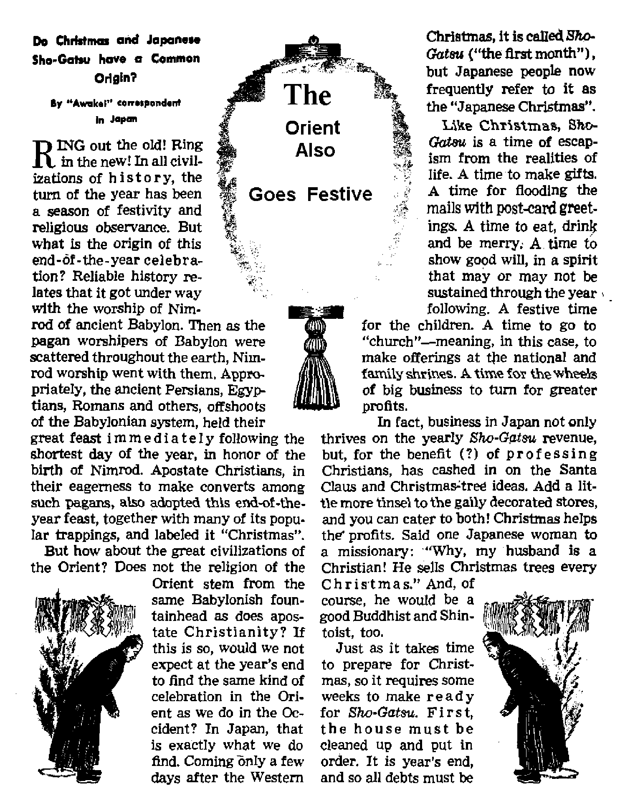

NOAH’S PASSENGER LIST
* Peace on Earth’—a Shopworn Slogan
The Orient Also Goes Festive
The Censoring of Movies
THE MISSION OF THIS JOURNAL
New* Sources that are able to keep you awake to the vital Issues of our times mart be unfettered by censorship and selfish interests. “Awaker* has no fetters. It recognizes facte, faces facte, is free to publish facts. It is not bound by political ambitions or obligations; it Is unhampered by advertisers whose toes must not be trodden on; it is unprejudiced by traditional creeds. This journal keeps itself free that it may speak freely to you. But It does not abuse its freedom. It maintains integrity to truth.
41Awake 1” uses the regular news channels, but Is not dependent on them. Its own correspondents are on all continents, in scores of nations. From the four corners of the earth their uncensored, on'the-scenes reports come to you through these columns. This journal’s viewpoint is not narrow, but is international It is read in many nations, in many languages, by persons of all ages. Through its pages many fields of knowledge pass in review—government, commerce, religion, history, geography, science, social conditions, natural wonders—why, its coverage is as broad as the earth and as high as the heavens.
"Awake 1” pledges itself to righteous principles, to exposing hidden foes and subtle dangers, to championing freedom for all, to comforting mourners and strengthening those disheartened by the failures of a delinquent world, reflecting sure hope for the establishment of a righteous New Worli
Get acquainted with “AwakeI” Keep awake by reading “Awake!”
Published Semimonthly By Watchtower Bible and tract society, lnc.
117 Adams Street N. H. Knobs, President
Printing this issue: 875,000
Lmiigh !■ wbEib the watizlst It Pihthhed:
Afrlkauu, Earitah, l<lndfihh Genaro, Nprweiiui, Speulah. Monthly—Daoixh, ffrndi, Gmk, Portuguw®, Swedljb, Ukrainian.
Offices Yeirly subscription Bi'j
Amrlcm U.S., 117 Adana 9t.r Brooklyn 1. N.Y. $1 Alitrakll. ll Bemforf Rd., MrathfieH, N.S.W, Caftadt, 40 Irwin Ave,, Tptoato 5, OcUrjo 11 34 Craren Terrim. Louden, W. 2 T« loath AfrlM, 823 Botin How, Cape Town fa
Biurtd u oomd-tian mitLtr st Bynoklya, N. Y.
Brooklyn 1, N. ¥.f U. A.
Ghani 8uI»er, decretory
Five cents « copy
should be vent to offiev in your country in compliance with resuJattrts to guaumti* safe delivery at money. Hemlttanui sra accepted st Brooklyn from countries where do la located, by International money order only. Subscription rates tn different countries tn ben lUted in local currency. Netlaa of expiration (with renewal blank) it sent st least two issues before subscription ei pint. Chaitio of addnu when sent to oqr office may be expected effective within one toouw. Send your old as well as new address,
Aet <tf Marti 3, 1979. Printed In V. S. A.
CONTENTS
•Peace on Earth’—a Shopworn Slogan
Taxes and the Ecclesiastical Conscience
Denial of Freedom “a Grave Mistake” 20 The Orient Also Goes Festive
Religious Significance of Sho-Gatsu
“Your Word Is Truth”
"M, Duplessis, Witness for Jehovah”
Stalin’s Birthday to Replace Nimrod’s 27 Watching the World
Brooklyn, Nt Y,f December 22t 1951
VoJumo xxxii
Number M
CHANGING weather declares the seasons to man. But he can note them by other means as well. Popular custom has made certain slogans as seasonal as various types of clothing. Their appearance at once announces the season to which they belong. But beware that you do not lose the value of lofty principles because the world parrots them according to season rather than in sincerity and conviction.
In just this way has December become the month for reciting the Bible verse at Luke 2:14. All have seen it blazoned across newspaper heads on Christmas morning, or posted on billboards, in shop windows, in front of churches, etc. The rendering generally used is from the common Authorised or King James Version, whjch reads: “Glory to God in the highest, and on earth peace, good will toward men ”
But the text is shuffled in with a host of other December customs. With December comes the “Christmas rush”. Everywhere, the spirit of giving is stressed. Mother, father, sister, brother, husband, wife, sweetheart, aunt, uncle, cousin or just neighbor —all should be remembered. But is the great spirit of generosity the motivating force behind all of this? Oh, no! Notice that it is the large commercial interests that promote such “Christmas spirit”, and that a substantial rise in prices accompanies the rush season. Even shop owners who do not believe in Christ find window wreaths, trees and greeting cards all “good business”.
The charitable spirit is everywhere, jamming the streets with contribution drums, tingling bells and Santa Clauses by the dozen. But charity drives must be managed. And, alas, there are so many managers that by the time each has had his turn at a share of public contributions, there is little left for the alleged beneficiaries—barely enough for a few newspaper pictures to be taken of one or two receiving the handout.
Still the spirit of generosity rages on. There is no time like Christmas time to adopt an orphan if you are ever going to. The president of the nation will probably set a national example for good works by pardoning a host of convicted criminals. Perhaps readers will recall how this presidential privilege was exercised by President Truman on December 23, 1946, the day he rejected a plea for blanket amnesty to American men of Jehovah's witnesses who had been convicted for conscientious refusal to participate in military service during the war; but, in sweeping fashion, granted such amnesty to one million Nazis in the American zone of Germany.
^Merry Christinas” parties often contribute an odious note, shattering the holiday quiet and adding widespread
drunkenness to the scene. Afterward, the merrymakers, feeling somewhat worse, have difficulty recalling just what they were supposed to be celebrating.
In such an atmosphere it is not difficult to see why catchy slogans are not long remembered; how they are packed away with the ornaments and kept in mothballs for another year. For so long has the world been reciting ‘peace on earth, good will toward men’ during the Christmas season, the slogan has come to be treated like any other part of the season’s trappings. It is placed in the same category with rising prices, gift-giving, orphan adopting, charity drives and presidential pardons. It comes and goes—like the buds of spring and the falling leaves of October. Nearly always, when the season rolls around, war darkens some part of the earth. But this Bible text makes good poetic material for political addresses and religious sermons, It would be a good idea, they think. So they keep quoting it, over and over again; and finally everyone forgets it is supposed to ever have a literal fuifiliment.
Is it any wonder, then, how lackadaisically the average citizen treats the Bible? Think of the example set for him by national leaders. International and national politicians will spend months spouting invectives at each other over conference tables, in Congress, or through press or radio. Then suddenly they note the calendar, jump up, shake hands all around, dispatch formal wishes of “Merry Christmas” to everyone, even the dourest foes. Then they rush off for a few public appearances where they may quote from the Bible; and a week end off before returning to get the buried hatchets and start all over.
Prominent figures will pose, smiling, for the press, and contribute what they fancy to be a very optimistic quotation on how things are looking brighter and if everyone continues co-operating all will get steadily better. But the flash bulbs have scarcely faded out before the smile is dropped and its temporary owner ducks quickly back into his lair where he is working overtime for the very reason that things are looking ever darker, no one is co-operating and all is getting steadily worse!
But God is not to be mocked! (Galatians 6:7, New World Trans.) The speech of fools who misapply his Word may try to do so, but in vain. It only proves that those who quote and kiss the Bible in public can be its greatest foes. Certainly there can be no godly peace for them.
And that is just what the Bible means. Modem translations show that Luke 2:14 promises peace only for those in harmony With God’s will, as when the American Standard Version states: “peace among men in whom he is well pleased.” Similar renderings by the New World, Moffatt, Goodspeed and other tfanslations show their agreement, as does the translation in the Catholic Douay Version.
Nor does God depend on defiant men who misapply his Word to bring peace to the earth. Why, if not to do this through his kingdom, did Jehovah God anoint Jesus Christ for new world kingship? Jesus knew this, so instructed his disciples to pray for such kingdom in his model prayer found in Matthew, chapter six. This agency is God’s means of achieving peace for our earth.
It is not the sign of optimism to seek the success of organizations that have made shopworn slogans of Bible texts. Rather, note those who believe the Bible and proclaim to others the Kingdom hope it reveals. Behold their optimism for a new world where “righteousness is to dwell”. What joyous proof that God can and will bring righteousness to all the earth are those who now dwell in peace with him!
we have state boards for passing on pie
ty Official and Self-constituted Guardians of Public SMorals
is not office it hqrks back to at least the fifth century B.C. According to authorities it began in ancient Rome and it was considered the crowning of a political career. In those days the censoring was done by two officers who had among their duties the registration of all citizens, the assessment of taxes and the publishing of edicts establishing the moral code. They could deprive a senator of his seat, a citizen of his citizenship and a knight of his horse.
“Censorship in modem practice,” says the Encyclopedia Britannica, “may generally be defined as action taken by any governing authority to prevent the dissemination of false statements, inconvenient facts or displeasing opinions among the governed.”
Today, in the United States, there is censorship of the press, of the radio, of the mails and of the movies. Movies seem to have been particularly vulnerable to censorship, both by official and by self-constituted censors, their censorship getting its start in Chicago, Illinois, back in 1907. At present the movie industry provides selfcensorship by means of the Production Code which is now “under the rigorous interpretation of Joseph I, Breen, a lay representative of the Catholic Church, who administers it according to the narrowest standards of this religious group”.
All moving pictures produced outside of the United States must pass the federal censor to gain entrance. On a lower level
tures, in seven states, and some 100 cities have their own boards. In addition to these there are the self-constituted censors, such as the powerful Catholic Legion of Decency, and ten or more other national organizations, representing the viewpoints of Protestants, women's clubs, etc.
To what extent is all this censorship exercised in the interest of public ihorals, and to what extent does it merely serve to prevent dissemination of “inconvenient facts” and “displeasing opinions”? Judging by the results, one is reminded of what the Encyclopedia Britannica once had to say (1890) regarding the Spanish Inquisition: “Though in theory, the church was as anxious for the moral purity as for the right faith of her members, the moral questions were presently eclipsed by the dogmatic; the church discipline judged conduct lightly, while it controlled opinion with an iron hand.”
City Censorship
Memphis, Tennessee, has the most notorious movie censorship in the land, it going so far as to ban not only all pictures containing “inconvenient facts” regarding the race questions but even such epics as “The King of Kings”. In Chicago, Illinois, crime pictures may not have a Chicago locale, police may not be shown as being corrupt or brutal.
In 1948 the clergy of Sioux Center, Iowa, led a battle against the movies and won a plebiscite, banning them entirely. However, shortly thereafter a new council was elected which had other ideas, and it continued the license of the city’s lone movie house.
Some cities take their orders directly from the Catholic Legion of Decency, among which may be listed New York city, Albany, New York, and' Providence, Rhode Island; the spokesman for the latter city’s Bureau of Police and Fire, which censors the movies there, stating: “If the [Catholic] Legion of Decency condemns a picture, we’ll condemn it. We go along with the legion and will continue to go along with it.” Incidentally, Rhode Island, which is mostly the city of Providence, is the only state in the United States that is more than 50 per cent Roman Catholic.
Hollywood Censorship
Spokesmen for the movie industry profess concern at the increase of movie censorship, but when we examine its own methods of censorship we wonder which is worse. Take the character of Richelieu, for instance. Anyone familiar with history knows full well that that illustrious, villainous, cunning, wholesale plotter of intrigue and war, who served as France’s chief minister during the reign of Louis XIII, early in the seventeenth century, was a cardinal. Hollywood, however, unfrocked him, for in its code cardinals are very pious gentlemen. The result was, as one critic put it: “Were it not for his doublet and hose, you could hardly tell him from the standard Hollywood version of a fifth columnist or a crooked used-car dealer.”
Another case in point was the picture of the life of Juarez, whom many Mexicans consider their foremost patriot. Juarez waged a bitter fight against clericalism, caused the adoption of the famous anticlerical Constitution of 1857, and in 1859 issued the Reform laws which completely nationalized and secularized the Roman Catholic Church in that land. Yet when Hollywood made a movie of his life, his chief objectives and victories were censored. Why? “Inconvenient facts"? Inconvenient for whom?
Another case in point is the picture “The Bicycle Thief”. This Italian-made picture was acclaimed by the National Board of Review as the best picture of the year (1949); it received a special Academy Award, as well as the New York Film Critic’s prize for 1949, and was generally considered as one of the finest pictures ever made. And yet, according to Life magazine, the Motion Picture Association of America made itself ridiculous by refusing to give the picture a certificate of approval. Can it be that Catholic opposition to this picture, as evinced by a band of Knights of Columbus marching on a neighborhood theater and threatening boycott unless the picture were at once removed, had something to do with the Hollywood movie industry’s making itself appear ridiculous?
Direct Catholic Pressure
An outstanding example of selfconstituted censorship of the movies was the banning of the film “The Miracle”, in the spring of 1951. The Vatican had seen nothing amiss in this story of a simple-minded girl who became an unwed mother, nor did the U. S. censors who authorized its importation, nor the New York State Board. Surely that should have been enough. But was it? No. The Catholic Legion of Decency opposed it and so Catholic Action went to work, from Cardinal Spellman down to the Catholic war veteran.
All of a sudden the city commissioner of licenses found the picture “personally and officially offensive”; the fire department
professed to find violations; the theater was fined $100 for permitting standees. Bomb threats and scares tried to disrupt the showings, while an unusually large and violent number of pickets insulted those who wanted to see the picture, resulting in a number of clashes and arrests. The state board, after twice licensing the picture, revoked its license; and the appellate court hid behind a 1915 statute which held that moving pictures, being entertainment, were not to benefit from the guarantees of the First Amendment to the Constitution, thereby ignoring a contrary 1950 verdict of the Supreme Court,
The New York Film Critics had planned on using the Music Hall of Radio City to award a prize to this bitterly opposed film, but in view of the threat of permanent boycott of the place by Catholics the ceremonies were held in the swanky Rainbow Room of Radio City. Seemingly the censorship of Catholic Action applies only to the common herd; the elite are exempt. This, incidentally, is clearly demonstrated in Spain, where liberal and radical plays can be produced if the audience is limited to the upper classes. There it is “poison” to tell the common people that “a Christian is not superior to a Jew”.
To present an impartial picture regarding censorship of the movies by selfconstituted guardians, there must also be included the attack made by Jews on ‘'Oliver Twist". The villain in this picture, one Fagin, a Jew, aroused such a storm that the film was delayed for two years, and American audiences (it was made in Britain) were able to see it only after eleven minutes of it had been deleted.
To people who cherish freedom there is something rather disquieting about the use of censorship powers by the self-constituted guardians of public morals, and especially so in view of the fact, as shown in American Freedom and Catholic Power, that the majority of films condemned In part were found objectionable because of dogma rathdr than morals (clearly indicating the purpose behind movie censorship). That this opinion is shared not only by non-Catholic Americans was very apparent at the time of The Miracle episode, when clergymen of all faiths, Catholic included, protested against the ban.
That not all Catholics support such unAmerican censorship can be seen from the following. Allen Tate, noted Catholic historian and author, writing in the New York Times, stated: “Is there any institution in the United States, civil or religious, which has the legitimate authority to sup-u press books and motion pictures, however disagreeable they may be to certain persons oh theological grounds? In my opinion there is no such institution under a system that separates Church and State.... It is a usurpation of the secular power if the Church tries to implement its religious authority with civil force.” And a Notre Dame professor writes: “The pattern of these campaigns has shocked thousands of non-Catholic Americans, and this shock is shared by many loyal Catholics.... We are profoundly disturbed to see certain of our coreligionists embark upon crusades which we feel can result only in great harm to the cause of religion, of art, and of intelligence.^”—W. P. Clancy, in the Commonweal, a Catholic journal.
Above all, such censorship violates the principles of Christianity. Trying to prevent your neighbor from seeing a film he would enjoy just because you do not like it can hardly be termed loving him as yourself, neither is it treating him as you would want him to treat you. Besides, not regulating the morals of others, but witnessing, preaching the good news of God’s kingdom is Christ’s commission to his followers.—Matthew 7:12; 22:39; 24:14; 28:19, 20; Acts 1:8.
^CCLEBUSTICAL to fosuta day
J" showed a man how he amid get rid of W obligation to care tor his aged parents,- ■ AU that wm necessary was to claim that aSl cmehs wessJ.tJi was dedicated to God,, (Matthew
Jfw WtorMl Tram J MrM century or twenUettL-cwtu.ryH Jerusalem or New York. dt.yf scdestasttaal cometance is ever the same. You ask far proof? Then note tite following examples, taken feom The and
^aforai few, a Roman Catholic publica-tfon for priedsc
CA priest inquired regarding a certain tor who wa$ doing much charity work and who had a large family,. Did. the doctor do wrong to .failing, to HsttJds total income, thus escaping some of his taxes? fTAnd] if it iff to violation of legal justice,, must a doctor make a readjustment; o.f former tax reform?" C, wNo, It would nut Ite a violation of legal Iwslte/* the priest was tokt k6Fer those who Wd that tax laws are .merely penal laws, the solution is simple, In the case we have a d*x> tor who fe paying some of his income tax, hut not all. Since tax rates are high, some morab lata teach that a person who conceals a thin! etf a fourth, part of the real value of taxable property is not. guiHy of injustice. Even after deducting that amount, he has still fulfilled hh obligation to Ow common good, (NoM.tor n; n, 31(>) ... <
"The answer to the second question is that, even though there a violation of legal jus-ffoe, there would be no obligation, .for the doe-tem to make a ixjadjustment of hfe past income, A. violation of legal justice tarn not carry with, it the obligation of restitution, What ha® been, written above pertains* to the forum of emwtoMce;' the cMJ Uw tata a very mong sgtandwn tax evasion?"—-Issue of Ja.mj.ary IM, U Ami in behalf of the comcience^tridten tas; coimftefor1 who had advised his diente to etekn the jM 15 per cent *;ta'Suctkm for charity reptrdleiss of what they actually contributed to charity and to double all the amounts for which they w.?re legally entitled to exemption md who iw.d. induced government tax agents to grant: illegal exemptions, the inquiring priest was counseled by the Km?sew?
^■< “We must. begin, by making the observe 7 tian that there h good, authority for holding that income tax; like taxes to general, So penal law, became 'many theologians. allege ■ that the .State has ample tadllties to collect taxes, , . j There is afeo thmlogical, authority for holding that 'taxes are excessive and intemted to beP to make up for successful s tax dodging; and .that they are excessive ? with present-day government by reason of uncaHed-for public' expenditures, So if au A individual alleges money spent for charity y that he has not. spent, and also expenditures in making money that he hadn’t actually m&deP k he seems to be justified in evading taxation by so doing, , .. I would be loath to say thrift
1 anything eta.? in the procedure inquired abbiA V but a form of aelM^feme against exc»tve exactions. Nor do I see h.ow the tax CTlteetOT
4 would te itMhy violating his oath ta making v ffofoMmenta that are at least equttabfo, if not demanded by distributive justim”.....rtrwe
of April, IM,
(i- Sc?, since Catholic theologians conrider / tax laws as “penal hws!,( and the tax r^tes as excessive, and the govemmente as unwise hi theSr use of the tax money, they adviw A the taxpayer that he is not under any oblh ' gatiem to fite tamest tax returns I When, the moralists and the tiwtogtam of tho target religious organization to a. land propagate such moral pMtawliy, U H any womler that tax evarioni has become wch a problem?
?' $■'- Needta to say the Bible doe® not authorize any suck course of. conditet What. Caesar a does with his tax money h Caesar^ bwtam, not the Christian^. The Christian^ obligation I,.?s not to try to transform Caesar, nor to
| penaltae him by withhoMing taxes? legally imposed. He will Jet God avenge tol wiright" eottsnm In Hfe due time, Until there I® sfo more Caesar 'the Christian will follow .insjtraction.ff consenting texe^: ‘Tay tack Caesaito tltinga to Caesar, but things
\r to GodT Tita Christi an will, follow the apostolic* injunction: "Render to all their dwff, i. to him who ealta for tribute, the tribute; tax' him who calls for tax, the tax; to Mm who calls for tarr such fear; to him who calls for horror, such honors.......-John 18;37; Mark 12:H'^
Romans 12:10; 13:7, New World Tran&, ■
generations gave him little more than approximations, when it came to the exact minute. Today’s busy, train-and-plane-catching world could not be easily placated with such goings on as that. And radio stations must know even the precise second for timing their programs.
Even the rotation of mother earth with its ever so slight variation, though ever the standard medium for time calculation, is no longer accurate enough to fully satisfy the modem age. The U. S. Bureau of Standards maintains an electrically driven dock controlled by the movement of atoms in ammonia molecules, and is comparable to clocks in the Bell telephone laboratories, Murray Hill, New Jersey, and the U. S. Naval Observatory. Though such timers operate independent of astronomical calculations, they are periodically checked with these. Since the latter depend upon the rotation of the earth, the great ball we live on can still be considered our basic dock. Its accuracy is estimated at within one part in thirty million; while the Bureau of Standards* clock is calculated to have a constancy better than one part in 20,000,000, and is rated as potentially accurate to within one part in 10,000,000,-000. Accurate timing should result.
On the face of the great earth clock there is a bump near the spot known as Washington, D. C. On clear nights an astronomer from the U. S. Naval Observatory peers off into the great universal “works” and by means of precision instruments calculates the exact time the earth passes under a certain star. The following night like calculations are taken when the star is again passed. The resulting interval is, of course, one day reckoned according to star or sidereal time.
Ancients Used the Same “Clock”
The ancients were smart enough to recognize earth’s value as a timekeeper as well, though their instruments for calculation may have been a bit more crude. An ancient Egyptian observer and his assistant would sit some distance apart, but on the same meridian, on an elevated roof top. The observer would sight a rising star ' through the forked top of a palm leaf, and in his other; hand, line up the star with the top of a plumb line. Just above the weight the line was allowed to dissect part of the head of the assistant. When, by following the star, the line dissected the exact crown of the assistant’s head, the star was said to be in culmination, crossing the observer’s meridian. The primitive device used was called a merkhet, meaning “instrument for knowing”, in this case, for knowing the hour. Hence this might be the earliest known word for “clock”.
It is presumed that the Egyptians also utilized an early timepiece to mark the time for them they so carefully figured. This is thought to have been a water clock, an instrument termed by the Greeks a tiepaydra, or “water stealer”. An early example known is one made for Amenhotep I around 1550 B.C. This clock was fitted with little statuette figures that made appearances at the proper intervals and indicated the hour. Since no mechanism was then known in the form of cogwheels and gears, these figures probably were on floats that moved up and down with the water level. The Greeks timed their long-winded orators with a clepsydra, and, on one occasion, Martial, a Latin poet, capitalized on this fact to jibe one particularly wordy speaker who took frequent drinks of water during his speeches. How much more relieving to both himself and his listeners, the poet observed, if, instead of from his cup, he would drink from the clepsydra?
Then there were sand clocks. These were an improvement in that, whereas water changes In rate of flow with a change in depth, sand does not. Variations like the hourglass or the three- or four-minute glasses used in cooking eggs are most well known now. Some say the Chinese timed their days with a smoldering rope of punk-like material, and an age-old means of calculation hinged upon the consumption of given amounts of oil by lamps. Alfred the Great of England divided his day into six 4-hour periods by the burning of candles, requiring four hours each. The renowned sundial, still prominent as yard decoration, consisted of an elevated rod in the center of its dial which was parallel with the earth’s polar axis. This was called the style. The face or dial could be in any position so long as it could catch the sun's rays. The style’s shadow would then shade the hours as the day progressed.
Cloekmokers Contend with the Devil
The spirit of the Dark Ages draped Europe under a veil that branded virtually all progress as of the Devil. Perhaps
this induced inventors to be very modest in taking credit for their accomplishments. At any rate, the exact origin of our more modem orthodox timepieces is very vague. Weight-driven clocks seem to have appeared suddenly in advanced stages of design around the close of the thirteenth century. Prominent among those credited with this invention was a French Benedictine monk of the tenth century, named Gerbert. Jh his time he is said to have set up an intricate timepiece at Magdeburg, but another monk of the sixteenth and seventeenth centuries declared it was so complicated that only the Devil could have assisted in its construction.
However, by the year 1500 most persons had dismissed the notion that the Dtfril was at the bottom of everything progressive, allowing inventors to crawl out from their holes and work publicly without fear of the gallows or headsman's fix! Even before that the magnificent clock associated with the Wells Cathedral had been completed in England (about 1392). It struck hours and quarters and its dial gave hours and minutes and the age and aspects of the moon. It was still in running and striking order right into our generation. By 1550 clockmaking attained much importance, and by 1600 the bitterest of the diehards acknowledged that the clock was here to stay. Advancement went on to the pendulum, the coiled spring and today’s fine electric varieties.
, Soon the public demanded more than simply timekeeping from its clocks. To satisfy the demand, artificers adorned their clocks with pictures or models of rocking ships, turning waterwheels, windmills, etc. Many clocks were encased in the tower of mtxjels of churches or cathedrals. On exhibit in 1949 in Heidelberg, Germany, a twelve-foot-high clock marked each minute with a deep gong and through the carved figures of a child, youth, adult, and aged man, announced the quarter hours. Ev£ry sixty minutes a skeleton declared the previous hour dead. In a collection of old clocks in New York there was found a 100-year-old time-teller in the form of a gruesome statue of an Oriental warrior. Heads of Chinese gods were displayed on its armored chest in place of numerals to represent the hours. On the hour, the eyes and teeth light up. This may fit in a museum but it Is not recommended to entice guests into your dining room—especially if you dine by candlelight! Woman’s world of fashion has done its bit by installing tiny watchworks in rings, bracelets and brooches, and even In the end of a lipstick holder.
Alarms and Accessories
The next time you feel like throwing your clanging alarm clock out the window on an early morning, try to remember that it only records the time, it does not make it Anyway, the American alarm clock, chiefly through the exploits of Westclox's "Big” and “Baby Bens”, has proved quite durable under nearly all circumstances. They have survived airplane crashes, hurricanes, trips through, washing machines, and, in 1940, one even went “down with the ship” when all hands were lost on a Lake Michigan freighter. Later the clock was recovered, firmly encased in a cake of ice. When thawed out, it at once resumed ticking operations! Primitive natives have taken to such clocks with great glee. A native king In Siam was buried with one; and some African witch doctors are known to carry them in their paraphernalia.
The angry awakener may take solace in the fact that clock manufacturers have long sought desirable substitutes for the brassy bang alarm. Enterprising inventors have come up with attachments for pulling away the sleeping one's covers instead or for tickling his face with silken threads. Another well-meant suggestion offered a hinged bed that, by communication from the dock, would dump Its occupant on the floor. In a far more considerate Une, one 1906 patent provided for a mechanism to brew a cup of steaming-hot coffee, ring a gohg when ready, and swing the prepared potion around under the nose of its proud owner. Modem pleasantries include clocks that turn on the radio at your favorite station and fill the boudoir with music.
This introduces the marvel of electric clocks and the array of special switches that have been provided for them to turn on lights, radio, shower baths, open garage doors, sound the dinner bell, etc. A model now exists that sets off the alarm when room temperature reaches an unsafe level, thus acting as an automatic fire alarm. Inhabitants of such clock-run residences must toe the mark to carry on their activities on time to correspond with the clocks, A citizen of Minneapolis mentioned in the Saturday Evening Post of December 9, 1950, subdued his dog to such a “dog's life” as well. A clock opened the dog's house door at six each morning. Furthermore, a microphone attachment reacted to any barking by the dog during the night, causing the apparatus to answer the surprised canine with a stream of water In his face!
Until electricity entered, man's long record of timekeeping followed ever ^imllar lines, first marking time by letting out sand or water, then by easing away a coiled spring. Now an evermore precisiondemanding age has developed atomic clocks. Yet the most shrewd inventor cannot trap time, but only clock it/ Man might long for more hours to the day or an eighth day to the week, but he must wait yet a bit for a new system of things that will not be forced to crowd so much living into so limited a period of time. Then life worth living will depend upon worthiness rather than time.
What animals made up the drtc’s “Zao’f Who"?
WITH unwarranted pride, distinguished American families frequently point to an ancestor who arrived in this country aboard the “Mayflower". But the “Mayflower’s” contribution to human genealogy is fragmentary when compared with the cruise of Noah’s ark. All present earthly life can attribute its existence to this latter vessel’s one voyage, upon the crest of a global flood washing out an entire world in the year 2370 B.C
Thanks to the devastating theory of evolution and the taunts and scorn of higher critics, multitudes have lost faith in the clear record of the flood found in the Bible book of Genesis, chapters seven and eight. Popular objections to the flood link in with genetics, the study of heredity recently treated in these columns, because facts relative to this science, founded on the now-recognized principles first taught by Gregor Mendel, provide the basis for answering such objections, they are hare considered.
In contrast with the idea of special creation, evolution holds that the discontinuities between life kinds rose gradually. Modem exponents of the theory claim that if all life ever in existence could be assembled, it would illustrate this by furnishing all the necessary bridges between kinds. To support this, they like to talk of the constant changes going on even now between “species”, with new “species” ever making appearances.
This requires a very broad use of the term “species”, as becomes evident when one turns to page 290 of the book Man and the Biological World, published in 1942, and reads that there are now known to be “more man one million species*" of plants and animals. A footnote .reveals: “According to a careful and recent estimate, there are now more thadJ5O,boO describedspecies of animals anymore than ouOflbO described species of plants ?
The gist of the argument is that changes keep until
new species^T^broughtJorth which itT tum also^ keep changing^ Proof of 'tfie'element of change is easy to find. They may point to Michael F-Guyer, professor of zoology, University of Wisconsin, who says in his book, Animal Biology: “No two organisms are exactly similar; moreover, chan^esj>ccur from gen-e^tio^t^^^ratfon, -sothaf^no offspring is^precisely like either parent or like any ancestor Varia-\tion is one of the most obvious facts 'in the animal world.” Ernest Mayr of the American Museum of Natural History presents convincing evidence of infinite variety in life in the book Systematics and the Griff gin of Species, then adds: "If some-/ body were to name consistently everything that is different, he would have to give a name eventu-
ally to nearly every single Individual.”
Now then, if every variety, or at least every form dignified by evolutionists with the label of “species”, had to be proved an original created “kind”, how in the world did Noah ever manage to take the required number into the ark with him? Furthermore, today certain singular varieties (like the red fox, Vu?-pes alascensis, of Alaska) exist in only one sector on earth, -tlpwjiid their ancestors get to such isolated spots without previously muTtiplyihg"&nd leaving descendantg between , there .and Ararat?
Bow Large Was the Ark?
In the first place, how large was the ark? Genesis 6:15 answers: “And this is the fashion which thou shalt make it of: The length of the ark shall be three hun-d^^^ybitS) the breadth of it ..fiftycubits' and the height of it thirty ^eu^its/’
Commonly the cubit was thought to represent the distance from elbow to fingertips, but due to obvious variation of arm lengthsfeighteen incfiesxame to be accepted as the equivalent. If this was the cubit of Noah’s day, the ark would have measured 450 feet long, 75 feet wide and 45 feet high. However, there is very good reason for believing the cubit of Genesis was a longer unit than this.
Here it is of interest to cite the authority of Clarke's Commentary on the Bible, where it deals with Genesis 6:15: “Bui that the ancient cubit was more than eighteen inches has been demonstrated by Mr. Greaves, who travelled in Greece, Palestine, and Egypt, in order to be able to ascertain the weights, moneys, and measures of antiquity. He measured the pyramids in Egypt, and comparing the accounts which Herodotus, Strabo, and
others, give of their size, he. found the length of a cubit to betwenty-onef inches and eight hundred and eighty-eight decimal parts of a thousand, or nearlyt twenty-two inches; And from this it will appear "that, the three hundred cubits of the ark’s length make five hundred and forty-seven feet; the fifty for its breadth, ninety-one feet two inches; and the thirty for its height, fifty-four feet eight inches.” McClintock and SMong’s C^cZoyedHz ^Vol. if'[X’S9§)7aEq^bacK^K^Sthorltifi^OT ancient architecture, makes similar obser-vations.
Other features of the ark’s construction are of value. Common fancy usually pictures it as an orthodox boat with pointed prow and stem. 'But while efficient for cutting the waters in normal ocean travel, such cons ti^tipnj^b^of^potential storage and accommodation spaqq^ things oF utmost importance to Captain Noah. The originaljiebrew word for ark, in this case, is tebahj which, McClintock and Strong’s Cyclopedia informs us, denotes a chest or ark. It is differentiated from the term aron describing the sacred ark of the covenant, in that itdenQtes something jiesjgned to float upon the water. (See McClintock and Strong’s Cyclopedia, Vol. I, p. 400, under Ark.) Further in the same item, this source relates:
“If we examine the passage in Gen. vi, 14-16, we can only draw from it the conclusion that the ark was not a boat or ship: but, as Dr. Robinson (in Caimet’s Diet. s.v.) describes it, *a building in the form of a paraBelogragU-^O cubits long,^j? qu-bitsbroad, and 30 cubite high."... So far as the name afforSsiny evidence, it also goes to show that the ark of Noah was not a regularly-built vessel, J)ut^ merely intended to float at: large^upon thejvatera. WeTnay, Therefore, probably with justice, regard it as a large oblong, floating house, with a roof either flat or only slightly inclined. Jt was constructed with three stories, and had a door in the side?’
Yet even this learned Cyclopedia betrays its fear of evolution’s hundreds of thousands of “species”. Apparently holding to the ancient belief that each of these varieties represents an original created kind, this source derides the fact that Noah could have provided for them all, several each of the “dean”, two of the “unclean” kinds, in the ark. (Genesis 7: 2, 3) Thus, while citing ecclesiastical authority for doing so, the authors conclude that^the FlQQ^^nyJ§tji^^been rnerefy^Iocal, accomplishing the blottingout of humanity, and necessitating only the preservation of a relatively few local forms of animal life. But the true Christian and believer in God’s Word can never accept such a compromise He reads that ’all the high hills that were under the whole heaven were covered’, and that ’all flesh died that moved upon the earth’. (Genesis 8: 19, 21) So he turns away, as we now do, to consider another more plausible explanation.
Variation * After Its Kind *
In Genesis 6:20, the account of those life forms saved reads: “Of fowls after their, kind, and of cattle after their kina, or every creeping thing of the earth after his kind, two of every sort shall come unto thee, to keep them alive?! fhis win remind one of the original creation account in the first chapter, except that the “beast of the earth” is there added as well as “the fish of the sea”. Of course, this latter class would be unnecessary for the ark. Carefully examine this use of the term “kind”. Observe that the Creator makes no effort to itemize the hundreds of thousands of “species” of the evolutionists. True, a large number of original created types would be found within each main division; but there is nothing to show that such Genesis fcjndslwould even approach in number the varieties of them now living.
So It is not necessary to dispute the facts related by learned biologists relative to obvious variation of kinds. What they see is correct, but this simply proves creation of original kinds which have since varied according to their natures. John W. Ritchie, in his book, Biology and Human Affairs, supposes that two animals, male andfeniale _of likejciiid, are “of a kind that would be able if need be to dig a hole, swim a stream, climb among the branches of a fallen tree, live on either animal or vegetable food”. Turned loose in a broad land of varied topography and resources, these hypothetical animals would, in what he calls “geologically a very short time”, produce many_diverse offspring, including some good climbers, some runners, some swimmers, some car* r — ™■ i i I -1- —wj 1 — -• ■ M x * j—i . • - Lx" j* ■ -r. . r . — .J.
nivorpus and fierce, etc. Yet, despite the vafied^pfogeny? aTTdescendants w p u 1 d rejnain^f the same basic Idnd as the original pair. Evolutlonhas never preved otherwise. TJor will it ever.
This is not a rash conclusion. According to the Mendelian theory of genetics, now recognized everywhere but in the Soviet Union, variations must always be traced to activities of genes and chromosomes wjthinthe living cells of the various brgan-isms. The noted evolutionist, Theodosius
Dobzhansky, in his work, Genetics and the Origin of Species, discusses at length every known way in which gene and chromosomal changes can take place. Yet he concedes, “It must be admitted that in n6 case have all the differences between two good species been completely resolved into gene changes/’VFrank L. Marsh, professor of biology, Union College, Lincoln, Nebraska, notes this and adds that then the distinction and immutability of whole groups of species must be even more concrete. Further, Marsh observes of Dobzhansk/s work, “Those who have given the second edition of this author’s book, Genetics and the Origin of Species, a careful reading will notice that after he very diligently considers all forms of change now known, he still finds no force in operation today which is of the quality to produce the present marked discontinuity. The greatest changes he hasjbund are the mere production"pfaddit i^^rnod^rn ^species’ within groups already clearly set-off nature^ ~
Fossil Record Verifies
To keep his language clear, Marsh defines a commoi^fcinSfas a division within whiph cross-fertilit? is possible. Where failure to accompnsh vf.ertjlization occurs, a demarcation of a kind is reached'Then ” he turns totfie TbSSiPfecofdlSFTife destroyed by the Noachian deluge. There, he points out, is to be found not the evolutionary continuity of life, bridging from one basic kind to another, but the direct opposite, clear-cut discontinuity of kinds. In support, note the words of George Gaylord Simpson, in his work, Tempo and Mode in Evolution, page 99:
“The facts are that many species and genera, indeed the majority, do appear suddenly in the [fossil] record, differing sharply and in many ways from any earlier group, and that this appearance of discontinuity becomes more common the higher the level, until it is virtually universal as regards orders and all higher steps in the taxonomic hierarchy.”
In his own book, Evolution, Creation and Science, Professor Marsh reconciles the variations within kinds with the stabil-'itv of the kinds themselves, adding: “If /processes of variation today are not erasing JheTfiffererice^hetweenSriMS^ nfettfier could theyjlp It’ in ‘ OTe'^houMd/million years.” Taking three simple kinds, man kind, horse kind and dog kind, he shows by a chart how relatively few created types of each could produce the great variety of each now known.
Hence, it would seem reasonableJdiflt Noah’s animaTgassengers included a rather select “zdq^swEqIL representing original Genesis kinds (ormaraminsy as Professor Marsh also terms them). Thus would the preservation of all “kinds” of life be assured. Take man as an^example. Within the one original man^ZAdanx/residea The genetiejngke^up able in due timgjo produce^ the great spread of humanity now evident. The fact that the great body of the race was destroyed in the flood in no way hindered this, for Noah’s sons possessed within their loins the potential for producing this same varied progeny.
Ark Provides for All Passengers
To trace back to each original animal kind that entered the ark would, of course, be impossible. The fact alone that some have since become extinct would prohibit this. However, Clarke’s Commentary makes certain interesting observations. Of the six divisions of animal life it assigns, this source eliminates fish, worms and insects as not concerned in the ark calculations. This leaves mammalia, aves and amphibia. Though the Commentary gives the entire naturalist breakdown of each group, it emphasizes that undoubtedly only the basic genera or kinds would be of concern. With interest we note that they assign only forty-three genera to the mammalia division (excepting the whale kind, certainly of no concern here), seventy-four to the second class, birds not including webfooted fowls), and ten to the third class, amphibia (reptiles and serpents).
Bishop Wilkins is cited, who believed that buf seventy-two kinds of quadrupeds required space in the ark and less than two hundred birds. The bishop even worked out what he considered the space necessary to accommodate all of the meat eaters as equivalent to twenty-seven wolves. The rest he computed as requiring space equivalent to 180 oxen. He allows 1,825 sheep for a year’s food supply for the carnivorous kinds and 9,500 cubits of hay for the others. Ample room for such animals and their food was considered available in the ark’s first two stories, with the third left for the fowl, Noah and his family.
Note now the following from George Bush, then professor of Hebrew and Oriental literature at New York City University, published in his Critical and Practical Notes on Genesis, in 1844. Taking even the short eighteen-inch cubit, he found the ark a vessel capable of carrying 43,413 tons. Compared to a first-rate man-of-war of his day, Professor Bush observed that “the ark consequently possessed a capacity of storage equal to that of eighteen ships of the line of the largest class, which, upon a very moderate computation, are capable of carrying 20,000 men, with stores and provisions for six months* consumptipn, besides 1,800 pieces of cannon. As all the various distinct species of four-footed animals may be reduced to two hundred or two hundred and fifty, it cannot for a moment be doubted that the ark would contain the specified proportion of these, of birds, insects, and eight human beings, with the requisite supplies of food for a year”.
The Migration from Ararat
The flood waters subsided, the ark, perched on one of the peaks of the Ararat chain, was opened, releasing its live cargo to scatter in all directions. How then did that red fox, Vulpes dktscensis, get to Alaska? The same way its relative, V. casca-densis, managed to make California— through a long and extended migration. But none need try to prove that each of these varieties was an original Genesis kind that moved halfway around the world from Ararat before trying to reproduce. How much more likely that these and probably a number of other fox varieties are all descendants of an original pair of ancestors that rode out the flood in the ark. As they migrated they multiplied, leaving varieties of their kind all along the way. How far the original pair got is unknown and unimportant, TJie migration continued until the farthest point of distribution was reached. Time, geographical influence and the normal degree of mutational changes did the rest: Variations occur, the kinds remain, unchanged, immutable. Now science is able to prove the very things the Bible, oldest scientific textbook of our globe, has so long taught.
The part Noah’s ark played in the ancient and modern study of genetics has been considered. Whether or not fortune hunters ever find the frozen remains of the craft is unimportant. Its use is over. Testifying to its existence and memorable voyage are the multiplied varieties of life descended from its passengers. Now scientific fact joins hands with Bible truth to slap down God-defying evolution and critics of God’s Word; Like grass, vain theories wither and die while "the word spoken by Jehovah endures forever**.—1 Peter 1: 25, New World Trans.
of Brewers Lagoon, some two hundred miles of water separated from the sea by a long, sandy,
By ''Awcfal'* fa Honrimtn
Coast, is one of the fringes of civilization. Very few places, whether in the depths of Asian or African Jungles or in the frozen reaches of the Arctic, could be more remote and isolated. Lying along the extreme east end of the sandy north coast of Honduras* the area comprises parts of the Honduran province of Coldn and the Nicaraguan province of Cabo Gracias a Dios. Although it lies not one hundred miles from modem civilizations, it is virtually untouched, being one of the earth’s last unexplored regions. The area is of interest to God’s ministers also, for the Mosquito Coast cradles several semicivilized Indian tribes that have not yet been reached by the grand message of Jehovah’s established kingdom.
The Mosquito Coast gets its name from the race of Indians who were originally called Misskito Indians, but who are now by corruption called Mosquito Indians. Coincidence played its part in accurately naming an area so completely infested with those two-winged denizens of the tropics. The Mosquito Indians are now divided into several tribes, the Zambus, Payas, Vicen-tinos, Toacas and Secos, These Indians have never been civilized and still live in much the same condition as their ancestors did centuries ago.
The swollen waters of the muddy Patuca river make their way out to sea by way palm-lined spit of land. This is the entrance to the Mosquito territory, and it is as lonely as it is remote. At the mouth of the lagoon, where the water spills its way to freedom, stands a small Carib village.
These Caribs of Honduras belong to the race of black Caribs, the original red-cinnamon color having vanished. During the past century the whole of the Caribbean seaboard has been flooded with the blood of runaway slaves, and the dominating blood of the African Negro has greatly changed the characteristics of the Caribs, so that now they appear almost more African than Indian. The Negro blood has greatly strengthened the race physically so that they are now much larger and more muscular than the pure red Carib. Their hair is thick, long and very black. Their features are African, manifesting the flat, spreading nose, but they still have the high cheekbone of the Indian.
Enter the Zambus
In the multitude of cayukas and pipantos that are being paddled out to meet us there begins to appear a different type of Indian, slightly lighter in color and more characteristically Indian. These are the Zambus from the upper reaches of the Patuca river, a few of whom have come down to the coast and are living here among the Caribs and other Negroes. To reach Zambu territory we must cross the lagoon to the mouth of the Tom-Tom cut-off and proceed up the cut-off by boat to the main branch of the Patuca river. From there we travel several days up the Patuca until we are deep in the heart of the Zambu country.
We come across our first Zambu village after nearly a week of travel on the river, a small village of less than a dozen huts. There is no evidence whatever of order in the village. There is no evident authority except for one old man who seems to be a sort of patriarch. They have no regular and well-run hierarchy composed of chiefs and medicine men. These Zambus seem to live more or less haphazardly at random and in complete democracy.
The religion of the Zambus is simple and primitive. The only real ceremonies accompany marriage and death. The Zambus are disorganized polygamists on a large scale. Four “wedding days1* are held each year, and no one is exempted from taking part in the ceremonies. On these days the young are married for the first time and only those giris who have proved themselves capable of producing children are allowed to participate. The older members of the village take part too, for on the quarterly wedding days the men are allowed to buy, sell and exchange wives with other members of the tribe. The fate of the women depends entirely upon the whims of their husbands and how much the men are willing to pay for their friends’ wives. Prior to the ceremony, enormous dowries of gold dust and ornaments are prepared.
In the center of a clearing far away from the village a huge bonfire is built. Around this the Zambus arrange themselves in three orderly rings, women in the center. When the moon is bright and the flames reach high, the ceremony begins. The men leap to their feet and begin a wild chant. The gentle shuffling of feet becomes a frenzied dance. The leaping flames of the fire grow higher and higher, giving the Indians a copper glow In the moonlight. Their faces betray that their senses have fallen captive to complete demonized frenzy.
Open Market in Wires
After the dance and a brief address by the patriarch, the buying, selling and trading of wives begin. With much shouting, shrieking and gesticulating, the men begin making offers of what they are willing to pay for a good wife. Not always a simple operation, sometimes this involves first selling one’s present wife for a stipulated amount in order to buy the woman one wishes from another. As the frenzied bartering continues, the group becomes ever smaller as more and more satisfied couples steal off into the woods. Finally, even the disappointed men make their way back to the village. They must be content with their wives for another three months; for exchanging wives at any other time than the quarterly wedding days is considered very immoral, and certain to arouse the anger of the evil spirits.
The Zambu Indians do not believe in the immortality of the soul. Death is taken very calmly and there is very little grief at a Zambu funeral. Nevertheless, a great deal of ritual and mysticism always attends the burial. The body is buried far away from the village in order that the evil spirits may not molest the tribe. All living vegetation must be destroyed in the area around the burial, that nothing may come between the dead man and the ground. He must be buried in the softest place in the area, the place where the ground is most “willing” to receive the dead.
As we move up the river after leaving Zambu territory, we come across the Paya Indians. These are somewhat smaller in stature than the Zambus but much more alert and Intelligent. Their language is complicated and is not apparently related to any other known tongue. They use two sets of words, one vocabulary for the men and still another for talking to the women.
Their religion is only slightly more advanced than that of the Zambus. Briefly, they believe in two great forces, one for good, one for evil. The latter is a cooperative society of scoundrels, known as the forever at war with the powers of goodness. These two forces are constantly struggling for control of the universe, or at least of the Mosquito Coast. Unfortunate events are alternately blamed on the unusual activity of the evil gods or the laxity of the good ones.
Each village is led by a Suquia, who is a combination judge, doctor and king. The principle of their ceremonies is celebration in an effort to please the gods. Before the ceremony a large quantity of strong liquor is brewed of yucca, oranges and cassava. Their demon-placating rituals involve getting drunk on this potion, a frenzied dance and a speech by the Suquia.
The Payas are even less formal about marriage than the Zambus. Apparently the village is the smallest social division, and the family, as such, does not exist. The Payas share the views of the Zambus regarding death and immortality. They are not advanced in the creative arts. There is very little music. They do not paint, weave or make pottery.
To reach the other tribes along the Mosquito Coast, one must backtrack down the river and make a portage overland to the Guanmta river. On reaching the Guarunta there is a change in the jungle. The air of tropical decay vanishes and there is new beauty in the foliage along the river. A riot of fantastic color breaks through the vivid green. The river becomes clear and swift. Along this river live the Secos and Toacas, along with a mixture of Zambus. The Secos* villages are larger and cleaner and better built. Solid and clean, they are built on mahogany piling. The Secos, too, show initiative in planting their own crops. Whereas the other tribes of the area content themselves with picking wild fruit from the jungles.
As one travels back down the river toward the Caribbean, the fringes of civilization begin to reappear, the Negro influence grows stronger and Spanish and English become more the languages of the people. The Guarunta river flows into the Caribbean by way of the Caratasca Lagoon. As we leave the jungle we pass through the trackless marshes surrounding the lagoon. Soon we once again find ourselves taking in the fresh salt air of the blue Caribbean.
Reflection on the pathetic condition of these people brings at once to the mind of the Christian the realization that thefr greatest need is to learn of God and his established kingdom. That many of them would respond is evidenced by the multitude of Caribs and other natives found associating with Jehovah's people farther up the coast. Perhaps the day will come when these very ones will carry the message to their own people that the Indians of the Mosquito Coast may become part of that great crowd from all nations and tribes who attribute salvation to our God and to the Lamb.
After these things I saw, and, look! a great crowd, which no man was able to number, out of all nations and tribes and peoples and tongues, standing before the throne and before the Lamb, . . . And they keep on crying with a loud voice, saying: “Salvation we owe to our God, who is seated on the throne, and to the Lamb” —Revelation 7:9,10, New World Trans.
FREEDOM cannot be preserved solely by boasts and attractive slogans. It requires watchfulness on all occasions, in every place, For example, on Sunday, August 19 last, the J well-known religious minority, Jehovah’s wit- £ nesses, tried to hold an outdoor public Bible talk in Memorial Park, Tarentum, Pennsyl- § vania. The meeting was broken up by local g police and the speaker arrested. Thus ended e an attempt to exercise rights on public prop- £ erty after denial by the council of formal J permission. J
This prompted a courageous local editor to print an editorial on the matter in, his Fafte# Daily JVews. Though this small paper’s * comment on an isolated incident may seem $ faint, like a “voice in the wilderness”, yet its J wisdom, logic and good sense could scarcely J have been improved upon. Because of its eon- $ cem to all freedom lovers who desire to re- § main alerted and awake, we here take pleasure J in reprinting most of the editorial which <t> appeared qnder the title "A Grave Mistake*? J
“How can we be honest in our condemns- J tion of Russia, Spain, Argentina and some other Latin-Amer)can countries for their g denial or abridgment of freedom of religion if we ourseives are guilty of the very same 2 thing*? Such action brands us with insincerity, g places us in a ridiculous position in the eyes << of the world and weakens the faith in us of § oppressed people who long have looked to America as the champion of freedom, every o form of freedom. 4.
“The News does not agree with much or § most of the teachings of Jehovah’s witnesses, g It does not approve of some of their actions. & But in its devotion to our Constitution and to 'I the American Way of Life it must, as must | every other Joyal American, condemn any action of any kind that denies to any sect in any way the right to worship as it pleases, to believe what it wants to believe and say what it wants to say. £
“If Tarentum council can deny to Jeho- -vah’s witnesses the right to assemble then, £ logically, by the same token it can also deny 4 to Jews, Catholics, Presbyterians, Lutherans, Methodists and adherents of any or all other ? denominations the right to assemble and hold services in the river park or on other borough property.
t “What would be said by members of other sects if, somehow, Jehovah’s witnesses should come to represent the majority and would refuse them the right that has been denied this tiny group of people? Would there not immediately be a loud clamor about the denial of a constitutional right and privilege? Then, should not the same clamor be raised in defense of the Witnesses? Americanism must be a two-way street or it is nothing. It isn’t true Americanism if it grants rights and privileges to one or several groups but denies them to others. Voltaire summed It up in & very few words when he said: T disapprove of what you say, but I will defend to the death your right to say it?
< “This is the essence of real Americanism. We secure and guarantee our own rights when we see to it that the same rights are guaranteed to all others, even those with whom we may disagree most vigorously and completely. It must never be forgotten that if one right assured by the Constitution or one of the Four Freedoms can be taken from one people, then all are placed in jeopardy. We can’t be half free and half in bondage.
“The News believes that the action of council in informing the Witnesses that the park was not available for their use was hasty and not well considered and that on sober second thought, remembering the Constitution and the Four Freedoms, the solons will amend their action by causing to be dropped the charges now pending and informing them that in the future the park will be available to them. We cannot afford to have it said, and cause must never be given whereby it can be said of Tarentum or any other borough or township in the Alle-Kiski Valley, that it is a place where men and women are denied those fundamental rights which are guaranteed to every American by the Constitution of the United States. True Americanism is a matter of deeds and not of preachments.” » As a happy ending for freedom, the case was dismissed and later talks were given in the park by Jehovah’s witnesses without incident.
settled. Hence there comes a great crop of suicides, for it is thought better to die **with honor” than to face the future in dishonor, debts unpaid And another drain on the family pocket, gifts must be pur-chased! Sho-Gatsu is gift time, even more so than the Western Christmas. Gifts are showered right and left. To the uninitiated Westerner, the sudden influx of gifts, even from slight acquaintances, is staggering —small wooden dolls, large dolls in glass cases, laquer ware, Japanese cakes, fruit, and so forth. But the motive is different from that of so-called Christians, who often give because it is a duty or to make themselves “good fellows”. The Japanese make gifts out of a generous heart.
On the eve of Sho-Gatsu, o-mochi (“the honorable rice-cake”) must be prepared. This is done at home, with much merrymaking. Sometimes you will find community kitchens set up on the side of the street, where the housewives of the district team up to make mochi. The constituents are rice flour, a little sweetening and water. The soggy mass is put out on boards, and beaten fiercely with large wooden mallets. Then it is baked into cakes of from two inches to two feet in diameter. As the cakes are flipped over, the'cooks raise a chorus Of “Atsu!” (It's hot!”) Much mochi is cooked, enough to last a month in some households, as a regular item of diet. Toasted mochi is a delicacy Indeed! The name mochi is said to mean “to continue for a long time”. Some say it was invented by a lazy cook, so that she could have a vacation from cooking. But mochi is also used in the Sho-Gat&u offerings for the ancestors.
Religious Significance of ShO’Gaisu
In most Japanese homes, you will find a small Shinto shrine set high up in the corner of the front room, or a larger Buddhist shrine on a raised platform on the floor. It is before these shrines that devout Japanese make their offerings of flowers, food and drink for the nation's gods, and for the sustenance and comfort of the ancestral spirits. At Sho-Gatet^ every shrine receives its offering of mochi cakes. Is not this akin to the offering of special masses at Christmas? And having in mind that the Japanese sun-goddess is especially honored at Sho-Gatsu, do we not here find a parallel to the offering of cakes to the Babylonian “queen of heaven”, as mentioned at Jeremiah 7:18?
It is the legend of the sun-goddess that takes us to the very heart of the religious significance of Sho-Gotsu. In times of antiquity, so the Shinto Kojiki relates, the sun-goddess retired into a deep cave and shut the door after her. Thus a]] the world was plunged into darkness. However, by means of music and dancing, and by decking the cave's entrance with straw pendants, the goddess was enticed to peep out, whereupon the door of the cave was tom open, and light restored to the world. Moreover, a rope of straw was stretched across the cave’s entrance to prevent the return of the sun-goddess. Truly a rebirth of the light! And when do the Japanese celebrate release of the sun-goddess? At the same season that the pagan Babylonians, Romans and others celebrated the rebirth of the sun, at the turn of the year.
What, do you suppose, becomes the central symbol of Sho-Gatsu? Why, the rope that was strung across the sun-goddess’ cave! As Sho-Gatau approaches, Japanese streets are decorated with festoons of straw ropes, seemingly never-ending ropes, and from these flutter zigzag white paper strips and pendants of straw. And as if to emphasize the idea of sun worship, every house displays the national flag, red sun on a background of white.
But what are those decorations that appear over the gates of Japanese homes?
They call them sMmenawa. Spme knotted ligion has taken advantage of the pagan
strands
rice-straw, fems, and In the celebration of the sun, which was observed
center a bitter orange.
the at the winter solstice.” Thus even the Jap-
straw decorations refer back to the tradi anese are aware that Christmas was no
tion of the sun-goddess. And the fem’s part of the uncontamina ted religion of the significance? Fertility. It expresses the early Christians, and that December 25 is desire to multiply as prolifically as the the wrong date for Jesus’ birth. Further,
fem does. The Babylonians,
had their
the English-language Maintehi had this
gods of fertility. The bitter orange is known as doi-doi, meaning "from generation to generation”. It expresses the family hope of immortality, and a never-ending posterity. Sometimes a lobster is added, as a symbol of longevity.
gateposts
Also at the entrance, but fastened to the other traditional emblems,
the Japanese equivalent of the Christmas tree. They are called kadomatsu. Usually they consist simply of two pine branches, one nailed to the right gatepost, and the other to the left, with the ends wrapped in white paper and tied with colored string. These pine branches again symbolize end
its issue of January 1, 1951:
“What evergreen trees are to the Occidentals on Christmas, the ‘Kadomatsu’ and 'Shimenawa’ are to the Japanese on New
Year’s Day.”
It is interesting here
note Hislop's
comment in his The Two Babylons-. “The Christmas tree, now so common among us, ■
was equally common in pagan Rome and pagan Egypt In Egypt that tree was the palm-tree; in Rome it was the fir; the palm-tree denoting the pagan Messiah, as Baal-Tamar, the fir referring to him as
Baal-Berith
. the Christmas tree is Nim
rod redivivus—the slain god come to life
less life. Remember that in ancient Baby
again.”
Hislop had been acquainted
Ion the evergreen tree, from which the Christmas tree descended, also stood as a symbol of immortality—that of the tyrant Nimrod. How strange that pretending Christians and Japanese Shintoists should exalt the pine tree at year’s end! But not so strange when we consider that all religious superstition had its common origin
with Japanese tradition, no doubt he would have added a comment about the Shinto Christmas tree.
in Babylon of old.
And probably the Japanese are more wide-awake to the pagan origin of so-called "Christian” customs than so-called "Christians” themselves. The following is translated from Japan’s leading newspaper, Asahi, of December 22,1950: “Begin-■
ning in the fourth century. Origin of Christ-■
mas. Christmas was first celebrated on the 25th of December, in the Western countries in the fourth century, and in England not until the seventh ctentury. For the sake of convenience, the Christian re-
BECEMBER 22, 1951
The Festival Itself
This is the big holiday! January 1-3, the feast of the year! Beware, he who travels on New Year's day in Japan! In one day, as many as a million people may travel to Kyoto, ancient capital of Japan and mecca of shrines. Shall we travel with them ? As at last we squeeze our way out of the train, and start to breathe again, we are
ing clatter-clatter of the wooden shoes, But gaiety pervades the throng. Nearly all the women wear bright, festive kimonos, contrasting with the drab gray kimonos or ill-fitting Western-style suits of the men. Many of the women carry their babies
strapped
their backs. The little girls
are most picturesque of all. Their holiday
23
kimonos are decked with flowers or quaint goblins, and tied around with broad sashes of red or orange. Each wears a bright ribbon and colorful wooden shoes.
We pass on into the temple courtyards. Successfully bypassing the fierce-looking giants, sword in hand, that guard the entrance, we suddenly find ourselves in the midst of a thriving market. For on feast days the temple grounds are let out to concessionaires, who will sell anything from “pop" to balloons for the kiddies. It has all the atmosphere of a church bazaar? Passing a number of stone lanterns, we come to the temple buildings, where priests are running to and fro and making their offerings. These are set out in the temples, many kinds of food, fruits, sa-kG; even whisky! Many really believe the spirits draw sustenance from these offerings. Say they: 1‘After several days, do you not see the fruit shrivel up, and the drink offering evaporate?”
Frequently, we see women and young boys scarcely in their teens serving in priestly robes. The male priests have their hair shaven, like the monks, and we notice that a string of brown rosary beads is an essential part of the Buddhist priest’s regalia. And we even see a Shinto priest wearing a bishop's cassock! The sweet smell of incense, glowing candles and, from the deep recesses of some of the temples, the moaning chant of prayers, remind somewhat of the great Western religions. But apart from the stone lions and foxes which adorn the temple grounds, there are fewer images than in the Catholic churches. Only a few temples display images of Buddha. Both Buddhists and 'Shintoists appear to prefer making their offerings before tablets bearing the names of the particular ancestors or gods to be honored. Often Buddhist and Shinto religions occupy the same temple court, as if in partnership.
But how do the people, worship? In front of this Shinto temple is a large box for the offerings, about six feet long and three feet deep. High above it hangs a bell, from which dangles a long and heavy rope (emblem of the sun-goddess). An old man approaches. drops two yen notes (ic) into the box, bows his head for a moment, and quickly rings the bell. Then he moves to a neighboring shrine, prays again, and claps his hands slowly several times. And so, on to the next shrine. Hundreds of worshipers, young and old, are moving about from shrine to shrine.
We turn from the sordid, dusty temples. What matter if some display sun-goddess ropes made of women’s hair, and others Buddhist images with a thousand hands? All are based on the old religious lie of the immortality of the soul and are a perpetuation of the worship of dead, imperfect humans. For Shinto and Buddhism, so intertwined that ft is often difficult to distinguish which is which, have, above all'things in common, the veneration of departed spirits. What a joyful day of liberation when Shinto and Buddhism, together with the proud religions of Christendom, are humbled forever! The Japanese people, minus their religion, are as lovable and unselfish a people as you will find anywhere on earth.
Even now, many of the kind people of Japan are finding the true religion that leads on to eternal life. And many more will yet find it! Then, in the righteous new world, no more sun-goddesses or Christmas trees! But instead, Christ Jesus will establish the one pure worship of Jehovah God earth-wide. May it not be that many of the humble Japanese living now will survive Armageddon’s storm, and together with joyous offspring live on into a new world paradise, whose islands and Fujiyamas and cherry blossoms will even surpass those of the beautiful Japan of today?
Taking in True Knowledge
AMONG the mottoes inscribed on the ceiling of the Congressional Library at Washington, D.C,, is this one: “The inquiry, knowledge and belief of the truth is the sovereign good of mankind?' In thus expressing their appreciation of the knowledge of the truth men of the world are merely copying the Bible, for it repeatedly emphasizes the importance of knowledge. “Knowledge does more good than money, it safeguards a man’s life." “My people are destroyed for lack of knowledge."—Ecclesiastes 7:12, Moffatt; Hosea 4:6.
But men are mistaken if they conclude that knowledge of the truth in its generic sense, any truth, all truth, is man's sovereign good. If that were so then the human race would be most happy today, because never before have men had so much truth on the many sciences such as physics, chemistry, astronomy, physiology, etc. But instead we find that in spite of all such knowledge never has the human race been in more turmoil, never has man been more degraded morally, never has man faced the future with such apprehension as now. Very evidently, man, in taking in knowledge of the truth, has not concentrated on the kind of knowledge that would be most conducive to his lasting well-being and happiness; the 'inquiry, knowledge and belief’ of the truth he has concentrated on certainly have not proved to be man’s sovereign good.
Then what kind of knowledge is man’s sovereign good? That which is found in God’s Word, the Bible, and concerning which Jesus said: “This means everlasting life, their taking in knowledge of you, the only true God, and of the one whom you sent forth, Jesus Christ.”—John 17: 3, New World Trans.
Yes, man's sovereign good is knowledge that leads to life, everlasting life. By concentrating on material progress men are showing themselves to be but fools, for what good are their possessions and achievements to them when they are dead; what good are man's efforts when directed primarily to the destruction of life and property? (Matthew 16:26) Man in pursuing such a course shows less knowledge and wisdom than the lower animals: “Even the stork in the heavens knows her seasons, the turtle-dove, swift, and swallow keep the time of their coming; but my people know not the ordinance of [Jehovah].” —Jeremiah 8:7, An Amer. Trans.
Why does our gaining life depend upon our taking in the right kind of knowledge? Because we cannot exercise faith in Jehovah God without knowledge, and we cannot please Him without faith, (Hebrews 11: 6) Only by a knowledge of who Jehovah God is, the Supreme Being, the Eternal One, the Great First Cause, the God omnipotent, omniscient, perfect in justice and in unselfishness, can we have faith in him; only by having knowledge of what he has done in times past, what he is doing now and will do in the future can we confidently rely upon him.—Psalm 62:11; 83:18; 89: 14; 90:1, 2; Proverbs 2:6, 7; 1 John 4:S.
Further, by getting acquainted with him through a study of his Word, the Bible, we get to love him. Loving him, we will keep his commandments, and that leads to life. (1 John 5:3) And as we appreciate his power and justice, we acquire a wholesome fear of him, a fear to do wrong. That fear of Jehovah “prolongeth days”; “is a fountain of life**; “tendeth to life.**—Proverbs 8:13; 10:27; 14:27; 19:23.
And not only must we take in knowledge of Jehovah God, but also of his Son, Christ Jesus, for all things come out front the Father but all things are through the Son. As Jesus stated: “No one comes to the Father except through me.’* That means obtaining knowledge of who the Son is, appreciating the fact that he once existed as the Logos or Word of God (before he came to earth); that means to appreciate that the Logos came to the earth to bear witness to the truth, to prove that a perfect man could remain true to God in spite of all that the Devil could do to him, and to provide a ransom for obedient ones of mankind.—Matthew 20:28; John 14:6; 1 Corinthians 8:6; Philippians 2:5-11, New World Trans.
By taking in knowledge of Jehovah God we become acquainted with his purposes and his will for us and where we fit in those purposes. By taking in knowledge of Christ Jesus we see the perfect example and model for us to follow. By exercising faith in such knowledge we will bring our lives in harmony with God and Christ Jesus and thereby assure ourselves life.
Jesus appreciated the value of knowledge, but most of his Jewish listeners did not. They were interested only in seeing miracles performed or in benefiting from them, But miracles were merely incidental to Jesus* main work, that of preaching, bearing witness to the truth. Said he: “Let us go somewhere else, into the villagetowns nearby, that I may preach there also, for it is for this purpose I have gone out?* “For this purpose I have been born and for this purpose I have come into the world, that I should bear witness to the truth.**—Maric 1:38; John 18:37, New World Trans.
Today the winds of religious, political and so-called scientific propaganda are blowing with hurricane strength, (Isaiah 32:2) Expressions inspired by demons are being sent forth by the Devil through his willing mouthpieces to deceive, if possible, even the chosen ones. Only those taking in knowledge of Jehovah God and Christ Jesus will be able to stand.—Matthew 24: 24; Ephesians 6:11, 13; Kevelation 16:13, 14, New World Trans.
Taking in the right kind of knowledge, the truth found in God’s Word, the Bible< is important for still another reason. Knowledge of the nearness of the new world keeps lovers of truth and righteousness from becoming despondent because of the wickedness, misery and woe found in the earth today. And knowledge of the true condition of the dead as well as of the resurrection hope brings comfort to bereaved ones as well as to those facing death themselves. The truth frees one from all such fears.
When the ministers of Jehovah go from house to house they meet up not only with opposition, but still more with indifference. Some hold, "It doesn’t matter what you believe.” Others, “There’s enough In the fifth chapter of Matthew to save any man.” If it didn’t matter what man believed why would the Bible place so much emphasis on knowledge ? And if all we needed was the fifth chapter of Matthew why did Jehovah God not only cause Matthew to write 27 other chapters but also have fiis other servants write 65 other books?
Nor is it sufficient that we merely read a chapter or two out of the Bible every day; no, not even memorizing parts of the Bible is sufficient. The Bible, remember, serves as man’s guide even as instinct guides the lower animals, For the Bible to guide us we must understand what it has to sey, otherwise how can we properly act on the truth it holds? In times past Jehovah God provided help for those desirous of knowing the truth to understand His Word, (See Luke 24:27; Acts 8:30,31; Ephesians 4:11; 16,) To provide such an understanding at the present time Jehovah God has provided help in the form of the Watchtower publications, Study them and be convinced.
TIE above was the headline that appeared in the Montreal French-language news- I
paper Le Haul Parieur, May 12, 1951, which ’ pointed out how the campaign of persecution I against Jehovah's witnesses waged by Que- I bee's 'Little Caesar' had boomeranged against ■ him. Details of this persecution will be found | In Awake! September 22,1951. The article said: C "The Superior Court occupied with the case I of Roncarelli v. Duplessis, has given its judg- 1 ment In many respects this judgment is one I of the most interesting and important which I has ever been rendered in the province on a ■ question as essential as that of freedom of I conscience and, secondarily, of the right of the individual to act without fear of reprisals, I
<L "From a legal standpoint, no one can prosecute the provider of bail, Roncarelli was I prosecuted, indirectly. That la to say, in re- I prieal he was deprived of his license, which i was the same as closing his restaurant ... | He had done nothing but disagree with the opinions of the men in power, fe it any wonder | If certain other provinces don’t feel like giv- । Ing to French Canadians the liberties which I are refused to others by the government of | Quebec?" ।
< An accompanying editorial added: |
"Through a judgment which should be . approved by all right-thinking people, Mr. | Justice Gordon Macktnnon has fined the Premier of the Province $8,123.5$ for having abused his powers. .. . We are living in a funny province. Because a citizen, by using a right which Is guaranteed by law, comes to the help of people he thinks are imprisoned without justification and secures their freedom while they await judgment in the proceedings started against them, he Is being deprived of his livelihood.
C, "The human-faced jackal from Three Rivers has appealed this judgment that proves we still have judges who will not let their sense of equity be perverted by dictatorial terrorism. Whatever the final decision may be in the RoncareUi case, the very great majority of our population will give approval to the verdict of the Superior Court reproving the arbitrary action of our small-footed dictator. - - -how many good people have been deprived of their employment or of permits that allowed them to earn an honest living for their families because, and only because they did not belong to the political party of which he Is the leader?
< “There is no doubt that the electoral chest of the Union Nationale which has been kept so well supplied by the contractors and tavern keepers will have to disgorge a large contribution in order to help Mr. Duplessis pay the eight thousand dollars to which he has been sentenced. His fortune will not tumble down like his cardboard bridge."
Stalin's ®rrtWay to T^epiace
To replace Christmas with Stalin's birthday anniversary would not be as shocking as many would think. Christmas is actually the time of Nimrod’s birthday, not Christ’s, and since Nimrod was a mighty one who stood in defiance of Jehovah God, he and Stalin can weld their birthdays with no great clash resulting. With
this in mind we read the following Associated Preas dispatch of November 15 that comes from Munich, Germany: "Radio Free Europe said it had received reports that Premier Stalin's birthday, Dec. 21, officially would replace Christmas as a holiday in Communist Hungary. The broadcast also said the Budapest Ministry of Foreign Trade had Issued confidential orders banning the Import of Christmas trees and forbidding the printing of 'reactionary' Christmas cards." The ancient, pagans deified Nimrod. The modem ones deify Stalin. Both return to dust,
■* ( watch;
S WORLD
A “Durable Plan” Needed
<$> "We stand in need of some durable plan which will forever put an end to our hostilities, and unite us by the lasting ties of mutual affection and fidelity/'—What recent politician said that? It was not a recent politician. These words were uttered by Isocrates, a noted Athenian orator, 2300 years ago. The plan was not found hi his day, nor through any political arrangement since. The New York Times drove this point home when ft said concerning the U. N. meetings In Paris, "There was not the smallest sign of a meeting of the minds between East and West. , . . The Big-Power conflict filled the Palais de Challot with gloom ” (1V18) and '‘vituperation, suspicions and pessimism are the order of the day” (11/19). At these Paris meetings the West proposed a disarmament plan including regular inspection to see that it is carried out. Then Russia proposed “prohibition” of the atomic bomb, but without inspection. Each side re* jected the other’s proposal.
U. S. Senator Taft, a presidential aspirant, charged (10/28) that the U. N. was an “utter failure as a means of preventing aggression” and that Korea proved that aggression is successful only if undertaken by a big enough aggressor. Other politicians violently disagreed, but all will recognize that the divided world still stands in need of a durable plan to end its hostilities,
Korean Division
<$> While truce negotiators remained divided, haggling, over the timing for a cease-fire, signs indicated some division within the Western democracies. In England the question was being seriously raised about whether America or the Communists were delaying the truce. American tempers rose when the eighth army's war crimes investigator, Col. Hanley, charged the Rads had killed over 6,000 U. S. war prisoners.
The astounding scope of this “limited war” was shown by the mid-N o v e m b e r (11/21) U, S. casualty total of 100,176, 12,450 of which occurred since armistice talks "began July 10, This casualty total was exceeded by only three other wars in U. S. history, the Civil War and the two world wars.
Peace and Geod Will
$"On earth peace, good will toward men.” These words from Luke 2:14 are heard frequently at this season when the world claims to celebrate the birth of the Prince of Peace; but in this divided world they certainly have not been fulfilled. Communist control has extended over 6 million more square miles and over 599 million more persons since 1939* and the democracies are aiming to the teeth for protection. “The air battle must be won," said General Bradley (11/8) when calling for greater air power. “Eveiy able-bodied boy to be drafted/' warned U. S. News & World Report (11/23) when discussing an anticipated draft speedup. “The main subject of discussion foutside the assembly hall at the U.N.’s Paris meetings] is not disarmament but armament,” said Anne O’Hare McCormick (11/12) In her New York Times column. Promises of peace and good will fail to materialize. The world wars failed to make the world safe for democracy or to establish the four freedoms. The oft-repeated text about peace and good will seems put of place today. But such peace is sure. It will come through God's kingdom, under the righteous Prince of Peace, However, only those showing good will toward God will live to see it; and reliable modern scholars more accurately translate this, "Upon earth peace among vwn <?/ good will”
Grave Lack ot Food
<$> “Grim Is still the word tor the food situation,” according to the Food and Agriculture Organization of the UN, which showed that 60 per cent of the world’s people are underfed, including inhabitants ot China* India, Indo-China, Indonesia, the Philippines, Korea, Japan, Mexico, Colombia, Peru, Chile, Brazil, East Germany, Italy, Greece, Turkey, Egypt, Tunisia and Algeria. Add to this the fact that figures are not available from the Communist lands, the Middle East, most of Africa, parts of South and Central America, and the picture is indeed black. World food production has Increased over prewar levels, but greater population Increases have left supplies lower.
The well-fed remain well fed, but most of the hungry are now hungrier. Land reform has been proposed as a partial solution to increase production and provide higher living standards for fanners. In many lands farmers must give upm o s t of their crops to grasping landlords or to a police state. It is not that earth will not sustain a much greater population, but poor and brairtorad metYiods, cwribinei with waste, have failed to provide a just or equal distribution df food for mankind.
Man's Insignificance
Some men have an inflated opinion of their importance, but, in comparison with the vastness of God’s universe, man la indeed small. A new instance was the announcement (11/6) that through another recently discovered “window” in the "Milky Way” telescopes have seen 100 more hitherto unknown 'TWilky Ways”, some of them hundreds of millions of light-years away.
But in comparison with just the earth, the tiny spot in the universe on which we live, man Is exceedingly small and weak. Within one week in November Nyamuraigra volcano erupted, threatening a neighboring tourist center; Mt. Mar-ran erupted on Ambrym island In the New Hebrides in the South Pacific, and sent thousands acurrjrng oft to saler places; and Mt. Etna spewed ash over the eastern coast of Sicily. Also, it was announced that when the village of Rood-sar, near the Caspian sea in Iran, was washed away 225 were drowned; and in Italy 200,000 were evacuated and 25,000 rural houses were abandoned as the River Po swept across the countryside. A message from the marooned city of Adria said, “There are 20,000 of us—an island of dying people. Come quickly.”
Insignificant man, who cannot harness rivers, volcanoes, or see the more distant parts of God's creation, has an Inflated opinion of hls importance when he thinks his wisdom superior to the Creator's and rejects the book of wisdom, the Bible, provided by Him.
Perfin—Dictator of Argentina
Dictators have much In common. They all must limit freedom of the press, spy on the people, hold political opposition in subjection. Argentina's Juan D. Perfin is doing this in Argentina, just as Mussolini did in Italy. Perfin abolished press freedom, set up secret police, made congress a rubber stamp and drastically limited free speech. In Argentina’s recent elections (11/12) opposition parties were not completely abolished, but they could not campaign freely or unite against him. Perfin got only 65 per cent of the vote, but PerfmiatBJi 5^
all senate seats, 135 of the 149 chamber of deputy seats, all governorships and provincial legislatures; and Perfin was elected for another six years. He once said, “Mussolini was the greatest man of our century, but committed certain disastrous errors. I, who have the advantage of having his precedent before me, shall follow in his footsteps, but also avoid his mistake s.” Hls course would indicate that Perfin still follows this theory.
King and Government of Nepal <$> King Tribhubana of Nepal, a remote kingdom between India and China, is believed by his people to be a reincarnation of the Hindu god Vishnu, Actually, Tribhubaha's power was very limited, because for 104 years Nepal has been ruled by the Rana family, who, through a hereditary hold on the office of prime minister, held control over the king. However, in 1949 the Nepali Congress i^arty7 aided, by Indian support, demanded an end to Nepal's absolute rule, and as a result of their pressure a parliament was created in 1950 In which a third of the members were elected. Last January a rebellion forced further concessions, and the Nepali Congress party was given five of the ten government cabinet poats. These five cabinet members resigned (11/12), forcing the prime minister to quit. For the first time in over 100 years the Rana family was out of control* and in its place the Congress party leader, Matrika Prasad Koirala, became the new prime minister of this remote Himalayan kingdom (11/16).
Atomic Heat—Hot News!
<♦> The hot news from Britain’s Harwell atomic energy station is that an 80-room office building is being heated by an experimental atomic pile. Atomically heated water flows into the pipes and radia-’wbTi ‘iTx ^xpertmeht in
atomic building-wanning- Similar heat for other buildings is not just around the corner, however, because of prohibitive cost; but the Harwell experiment is expected to provide much additional information on the possibility of heating a group of buildings with one atomic reactor.
Finland Tackles Inflation
A nation that manages, as Finland has, to keep outside the current world conflicts does not get much attention In world news, yet Finland's unorthodox approach to inflation is well worth note. The general theory is that to attack inflation taxes must be increased to mop up surplus money that is bidding for too few goods, but Finland has reversed this process by reducing taxed and abolishing food subsidies. The theory elsewhere is that this method leads to bankruptcy, but some neutral observers believe Finland may succeed in Its.
stops with a jerk the mad race of rising wages chasing rising
prices. Wages will be tied to the cost of living, and can rise only if living costs do. Finnish inflation has forced the cost of living ten times as high as before the war, but ,lf Finland halts inflation it will have succeeded in accomplishing something the bigger nations have failed to do.
4‘Dominion’’ No Longer
Since the four provinces of Upper and Lower Canada, Nova Scotia and New Bruns* wick decided in 1868 to become "one dominion under the name of Canada", the country has been in both official and com* mon use, the "Dominion of Canada", or just “the Dominion". However, according to Prime Minister St. Laurent, the word "Dominion" is now being gradually dropped from legal acts that come up for revision as the nation’s name becomes just "Canada".
Taxes, Religion and Education <$> Agitation to get public tax money to1 pay for private rell* gious education is under way in many lands. Three months ago (9/15) the pope asked all democracies to help finance his church’s religious education. The issue has caused great division of opinion in the U. S., Canada, Britain and France. In France vigorous objection to use of tax money in this matter continued even after government approval was given. Teachers went on strike in protest (11/9). The government said three-quarters of Paris’ grade schools and half the schools in provincial cities were affected by the walkout. Few persons would attempt to deny Catholics the right to reject public schools, but the state-financed religious instruction asked for by the pope differs radically from the democratic principle of church-state separation.
Divided World Not Hopeless
<$> When we watch the world. Its divisions, disunity and radically opposing factions depress many persons who fear that nothing will ever unite it in peace. Fortunately, they are wrong. One thing will definitely bring unity. That Is the unifying worship of the one true God. Skeptics, viewing today’s rampant disbelief, say all men will never worship Him, but the Bible disagrees. Unity is coming within the lifetime of today's generation, under the blessings of God's kingdom. Only by learning of this kingdom can you survive the critical times ahead and live through into such desired conditions. Side with pure worship to live into the righteous new system which that kingdom will bring.
ALL kinds of reports are circulated throughout the inhabited earth. Outstanding among them is the report on the activities of Jehovah’s witnesses. This international body of true worshipers is engaged in the most important work on earth today, announcing the rule and supremacy of the most high God Jehovah. An account of their world-wide work appears in the 1952 Yearbook of Jehovah’s Witnesses along with a Scriptural text with comments for every day of the year. As you read this interesting book you will marvel at what is being accomplished by this group in such a unique work. Keep up to date with their activities by obtaining a copy of the Yearbook and also the 1952 Calendar. Artistically portrayed on this beautiful calendar is the theme which they have chosen for the year: “ ‘Say to the prisoners, Go forth.’ Isaiah 49:9,”
Calendars are 25c each, or 5 to one address for $1, The "Yearbook" is available on a contribution of 50c.
iiiiiiiiiiiiiH>iiiiiriiiriHririiiNiiuNi<iiiiNi>iHtiHiiiikiLiii||ii|iii|i|iiiiiiiiEiHui'iimiiNiiiiiiiiiniiHiiiiiiiiiiii|FiiJiiriniiiJiiiiiiiiitiuririiiiiiiiiiiiJMii|iiiii|i|i|i|ii,iiiiiMnriMuiiiiiiiiiiii|iiii||i|iirjFiiiFinHiiu
WATCHTOWER 117 ADAMS ST. BROOKLYN 1, N.Y,
□ 5Qe enclosed. Send me 1 copy of the 1952 Yearbook of Jehovah^ □ 25c enclosed. Send me 1 calendar. □ $1 enclosed. Send me 5 calendars.
Name.................................................................................................... Street.................................................................................................
City...................................................................... Zone No......... State.......................................................................
30 AWAKE/'
Index to Volume XXXII of Awake!
January 8, Keeping Resolutions ....... ........ 3
The Vatican's Good Neighbors
of the Past ......... 3
Papal Rome’s Friends in
Modern Times J Flshdom’s "Man fromMars 13 Violence vs. Votes In Puerto Rico 16 The Trim Une Is the Health Line 21 Paying Back What Belongs
to Caesar1 ..........-■.............. 25
Watching the World! ....................> 29
January 22. 1981
Communists Take Over Nazi Fight to Smash Jehovah’s Witnesses ills the New Vatican Dogma an
►dem City of Refuge 21 Cures?1 .........-.
Boxing with j Hong Khng-M Modern Faith
United Nations Has Another
In the Wake of Two Hurricanes .. 9 Dying to Fool You
zjutronic Paintbrushes and the
February 221 1951 Dollars for Dictators
Sex Madness—Reason Fights
the Tide ......................k.... 5
Tibet, Strange Land of Antiquity 9 Why the Increasing Tax Load .... 12 Progress with Blood Substitutes 17 Another Argument for
Blood Substitutes ....... 20
Blood Transfusions Imperative? 21 No Real Self-Gain Without Love1 25
t March 8, 1951
Jehovah11 Witnesses Not Seditious 3
TV or Not TV—That la SOME
Are Evolutionists Scientific? Or
National Council of Churches
March 22. 1951 The Holy Year in Retrospect
Supreme Court Upholds
Fifty Million Gamblers Can Be
Do Mutations Cause Evolution? .. 12 Prodigal India
Lord’s Supper or Evening Meal1 25
April 8f 1951 fljtac1 the ‘'Messiah ? ..
Winwt Meet West In Peace? .. 5 "Missing Links" Between
Facts Regarding Our Ductless
The "Saints"—Mighty Heroes of
"More Happiness in Giving“1 ... 25
Persecution Rages in Soviet
Luangwa Valley, Home of
'Guard Against Covetousness’1 .. 25 Lowly Rabbit Vindicates Bible .... 27
May B, 1951
Small JSparks Kindle Mob Action 3 Famine Rides Through the Earth 5 The Human Body—an Amazing
Never Underestimate a Skunk! ->12 Forest Fire, the Red Destroyer .... 17 Fusion Religion In Haiti
Clergy Misrepresentation of _
May 22, 1951
Children—Do They Belong to
Light-Makers Older than Edi sort 13 Touchdowns Incorporated
Build Up Your Weight and Health 21 Cultivating the Quality of Love1 24 White Death In the Alps ....
June 8, 1951 Security................-
Science Cultivates the Oyster's
A Modern Quixote in Franco Spain 8 "We Want Self-Government”
Scouting the Skies for Falomar’S
Meet the Remarkable Hunzas! .... 26
June 22, 1951 This Changing World .
British View of Anglo-American
The Modern "Dying Standard” ■ 17 The Bee Is a Masterwork
Speaking In "Tongues” Today?1 24 The Twilight of Morals
July 8, 1951
NATO—The North Atlantic
A Son Writes His Clergyman
Evolutionists Fail to Tame the Shrew
July 22, 1951
Hero Worship Spins Modem Web 3 Two Worlds Shape Up
Plant Life Wages Chemical
The Aged’s Pitiful Parade to
August 8, 1951
Political Pressure from Religious
Papal Appeal for War Orphans 9
Scandals fn Orthodox Monasteries
Malaria, Scourge of the Tropics ■■ 21
Did Jesus Adore His Mother?1 .... 25
Jehovah's Witnesses in China 27
August 22, 1951
Golden Rule Blackout—The Wat
Independent Country's Dilemma 21 Mere Morality Not Enough1
The Reformation in Switzerland 27
September 6, 1951
Liberty Meets Another Challenge 3
Religion’s Moral Failure (Part 1) 4
Religion’s Moral Failure (Part 2> a No Overcrowding in
Democracy in Action in Panama 17
September 22, 1951
Reproducing the Miracle of Life 9 Narcotic Addiction in Youth
Inside Venezuela ..........................
The “Right Soil’1 Bears Fruit1 .... 35 Zone Therapy.......
October 8, 1951
Polish Communists Prosecute
Uncle Sam-World’a Worst Waster 17 ' With This Ring, I Thee Wed” .. 21 The Cross—Pagan or Christian?1 25 Gilead Graduates Seventeenth
October 22, 1951 Government Force in Medical
The Wasteful Warriors 5 Atinga—a New Racket in Africa... 9 The Biggest Things on Feet
Which Is Practical—the Bible or
Demon Voices Destroyed Nation 27
November 8, 1951 The International “Clean
British Central Africa—to
Federate or Not to Federate? 13 Genes Make the Race ...........
"Life, Liberty and the Pursuit
Christians Must Be Jehovah's
November 22, 1951
Conquering Fear ,,.....— ij,LLLLih+ti+in+,'» 3
The Smoke Menace .............-...........■
Breaking the Ramadan Fast 17 “Do You Take These
Jehovah’s Witnesses Fanatics?1 .. 25 Who Will Rule Burma?
December 8, 1951
Clergy’s Kingdom Part of This World ...........................
Atomic Power—Energy lor
Military and Industrial Use! .. 5
The Chao Phya River—Siam's Servant
Science Trips the Evolution Fable 20
Heredity—by Evolution or
Manner of Bible’s Inspiration1 .... 2S
Youth Sacrificed on Modern Altar 27
December 22, 1M1
‘Peace on Earth’—a Shopworn Slogan
Q O-CALLED “fundamental” religions complain of dwindling congregations. Traditional doctrines no longer save many who fall to communism or cave in to “modernism” with its foolish attempt to “please everybody”. Meanwhile, condU tions worsen, godlessness marches forward and perplexity mounts.
AMID this growing crisis the Watchtower magazine holds true to the Bible, By this guide it weighs religious claims, discards unscriptural doctrines, rejects empty communism and "modernism”. The Watchtower is up to date. It explains fulfillment of prophecies. The Watchtower is practical. It recommends Bible standards for sound Christian living. The Watchtower is helpful. It tells what these requirements are and how to meet them. It answers questions, provides courage at this world’s end, gives hope of a new world at hand. It is, a joy to read The Watchtower. Its 32 pages semimonthly are composed in easily read type and smartly augmented with attractive art work. A year's subscription, 24 issues, is only $1. Three booklets dealing with timely topics will be sent free to each new subscriber.
Enclosed find $1. Send the TVafcfttower magazine for
one year and the three booklets to the
Street
Name *...................
City..................................................................<.....................................
Zone No*........State.......................................................<................
32
Articles thus marked appear under the general heading “Your Word Is Truth*’, t The feature “Watching the World” appears at the back of each issue.